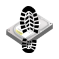

|  |
StompDisk
Create Hugemungous Files of Zeros Fast
|
When you delete a file under Windows, the file data on disk doesn't get deleted, just the pointers that Windows uses to access the file. The data is still there, but its location on the disk has been added to a free-list of disk space available to be over-written by other files. Until that disk space is actually over-written by another file, a moderately competent hacker with access to your old disk drive could potentially reconstruct your files. This means that before you sell, give away, or throw out your old computer or your old disk drive, it's a good idea to over-write as much of the data on the disc as you can with something innocuous, such as all zeros (note that I mean the zero byte 0x00, not the zero character 0x30).
The obvious way to create a large file of zero bytes in C++ under Windows might start with these #includes:
#include <cstdint> #include <cstdio> #include "Windows.h"
Create a byte buffer pBuffer of size nSize some multiple of the disk block size (we'll use 1073741824, which is 1GB, in this example):
const uint64_t nSize = 1073741824; //buffer size uint8_t* pBuffer = new uint8_t[nSize]; //buffer
Fill it with zeros using the Windows API function ZeroMemory:
ZeroMemory(&pBuffer, nSize); //fill buffer with zeros
Output it to a file stomp0.bin in one chunk using the stdio function fwrite:
FILE* pFile = fopen("stomp0.bin", "wb"); //open output file if(pFile){ //open file successful fwrite(pBuffer, sizeof(uint8_t), nSize, pFile); //write zeros fclose(pFile); //close file } //if
Remember to clean up afterwards:
delete [] pBuffer;
The above code is pretty much cross-platform (meaning that you could probably get it to compile with g++ under a *NIX variant with some small changes such as replacing the call to ZeroMemory with a memset), but it has a major drawback. It is horribly, unecessarily, and annoyingly slow, even if you have a reasonably recent computer with oodles of memory and a solid state drive. There are many things you can try such as optimizing the block size and writing consecutive blocks of zeros by putting the fwrite line into a for-loop, but it will remain slow despite your efforts because there's no way to get around the fact that you are moving large blocks of data from memory over the bus to the disk drive. Or is there? Actually, there is a much faster way to create a large file of zeros under Windows as follows.
LARGE_INTEGER nSize; //thanks for being weird, Microsoft nSize.QuadPart = 1073741824; const HANDLE hFile = CreateFile(L"stomp0.bin", GENERIC_WRITE, FILE_SHARE_WRITE, NULL, CREATE_ALWAYS, FILE_ATTRIBUTE_NORMAL, NULL); if(SUCCEEDED(dwErr)){ //file has been opened, hFile is valid SetFilePointerEx(hFile, nSize, 0, FILE_BEGIN); //set file ptr to start of file SetEndOfFile(hFile); //set end of file CloseHandle(hFile); //close handle } //if
Notice that there is no buffer of zeros and no moving large chunks of data. The zero-ing out of the data on disk is apparently carried out by the call to the Windows API function SetFilePointerEx. You'll find this code in function Stomp(). The rest of the code in Main.cpp is just I/O, prettifying, and error-checking.
A Visual Studio solution file stompdisk.sln has been provided in the root folder. It has been tested with Visual Studio 2019 Community under Windows 10.
StompDisk compiles to a Windows Console program that prompts for the file size in GB (Gigabytes) and the number of files to create. The files will be named stomp0.bin, stomp1.bin, stomp2.bin, etc. If you already have some files named stomp*.bin in the current folder, then they will not be over-written. The Fig. 1 below shows a screen shot.
It is strongly recommended that you do not open any of the stomp*.bin files in a text editor such as Notepad or Notepad++ unless you are willing to wait a very, very long time for it to load. If you want to check one of the output files to see that it contains zeros, I suggest that you use the free hex editor HxD. For example, Fig. 2 shows stomp0.bin open in HxD.
Before you dispose of your disk drive or computer, you should of course delete all of your files from the usual places such as the Documents and Pictures folders. The best way to delete them is to select them in Windows Explorer and press Shift+Delete. Note that these files cannot be undeleted, so make sure that you do really want to do this. You should also uninstall any unnecessary programs that may be caching data, clear all browser cookies and downloaded files, and empty the trash.
Once you are sure that you have deleted everything that can be deleted, use StompDisk to create a collection of progressively smaller files until your disk drive shows up as nearly full. If you choose to do this, be aware that Windows tends to get increasing slow and tetchy as its main drive gets close to 100 percent usage. After, and only after, you have created enough stomp*.bin files to fill the disk you should delete them all, again preferably using Shift+Delete. Your unused disk space should now mostly consist of zeros.
Important Note: StompDisk is not guaranteed to over-write absolutely all of your data. There may still be fragments of deleted files remaining depending on a number of factors including the sizes of the files that are still on your disk. If you are considering using StompDisk to cover up evidence of illegal activity, then don't. In any case you should read the license before the thought of using StompDisk even considers the possibility of crossing your mind.